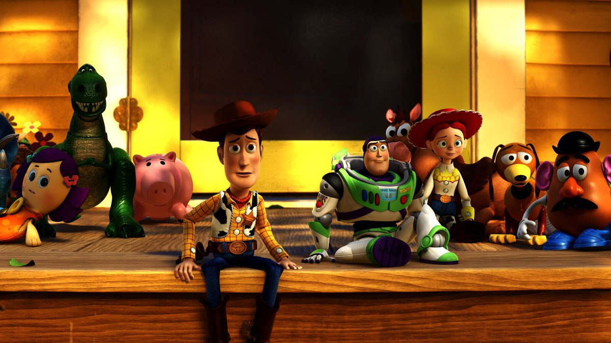

MENÚ i Hobbies Canciones Películas Páginas
Mi nombre completo es Actualmente curso el sexto y último semestre de la preparatoria "Colegio de Bachilleres del estado de Yucatán" en el plante Umán.
Toda mi vida he sido una persona que procura no llamar la atención. Me considero una persona seria, aunque en ocasiones si creo que salir un poco de la zona de confortes bueno. Creo que siempre he sido una buena estudiante, desde pequeña una de mis prioridades ha sido la escuela; sacar buenas notas, aprender, leer. Siempre me concentraba más en eso que en otro tipo de ámbitos, a lo largo de que he crecido me he dado cuenta de que eso es muy importante, aunque no lo es todo, como niños y adolescentes también debemos divertirnos y eso es lo que ahora intento; saliendo con amigos, pasando el rato haciendo lo que me gusta, estar con mi familia, disfrutar tiempo a solas, son algunas de las cosas de las que me gusta hacer.
Al ser de un pueblo pequeño no conozco muchos lugares, sin embargo me gusta conocer, ya sea lugares cerca o lejos de donde yo vivo. Me gustaría mencionar que soy una persona que hace deportes desde pequeña, sin embargo(aunque me encantaría) no es fue así, actualmente me gusta practicarlos y siento que es una buena forma de desestresarme.
Las canciones son una de mis mejores cualidades, y las menciono así, porque de verdad me encanta siempre escuchar una canción al momento de hacer algo, creo que son una gran manera de relajarnos mientras hacemos algo, le dan sentido a nuestras acciones, y cada género, artista y por supuesto letra nos hace cambiar en un instante. Creo que una buena canción siempre nos pondrá de buen humor:).
°Leer °Ver Series °Escuchar Buena música °Jugar Basquetbol °Hacer Apuntes & Manualidades
Only The Brave-Louis Tomlinson° Treat People With Kindness-Harry Styles° Cool Out-Imagine Dragons° Lemon Tree-Fools Garden° Birthday Party-AJR°
°Me before you °La sociedad literaria y del pastel de cáscara de papa de Guernsey °Toy Story 3 °The Edge of Seventeen °The Hunger Games:Catching Fire
Regresar al MenúTIC's IV Temas Selectos de Matemáticas II Temas Selectos de Física II Cálculo Integral Ecología ITM UADY COBAY